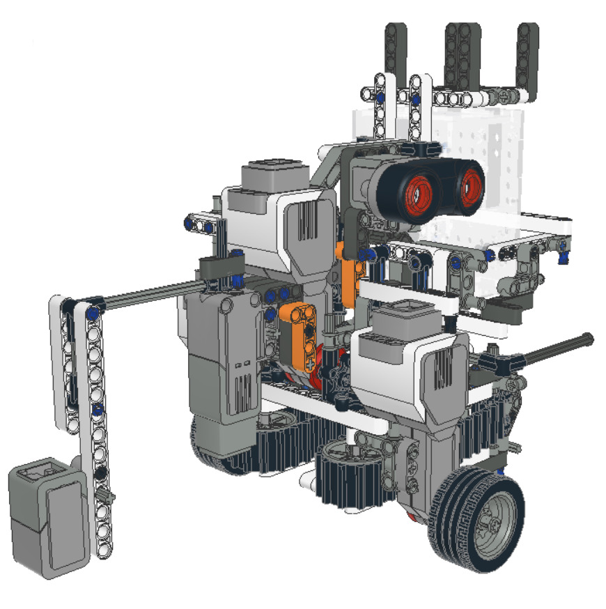

Learning through projects
Selected projects.
A few projects I’ve worked on with teams, what I contributed, and what we explored together.
CodeJam 14 · Challenge winner
AutoBot
A dealership chatbot that retrieves relevant information to answer customer questions.
My contribution. Implemented the RAG retrieval pipeline using embeddings, vector database storage, and cosine similarity search.
Outcome. Our team won the Matador AI LLM Challenge at McGill CodeJam 14.
View AutoBot on Devpost ↗Computer vision · Nov 2025
Sign Sync
An ASL-to-speech prototype for a fixed vocabulary of signs in virtual meetings.
My contribution. Integrated a CNN recognition model into a Python application for speech output, and contributed GPT-powered code to turn recognized symbols into words and expressions.
Outcome. Connected visual recognition, language augmentation, and speech output in a working prototype.
View Sign Sync on Devpost ↗McHacks 12 · National Bank challenge
BullsAI
An LSTM-based stock prediction project exploring market behavior during volatility.
My contribution. Worked on the LSTM model with a teammate and trained it on the dataset supplied for the challenge.
Outcome. Our team submitted a web application combining model projections with market indicators at McHacks 12.
View BullsAI on Devpost ↗
ECSE 211 · Robotics course project
ECSE 211 Robot

A team project to build an autonomous robot with LEGO EV3 parts and have it navigate an obstacle course.
My contribution. Implemented the wall-following PID controller and contributed to part of the grabbing mechanism.
View ECSE 211 Robot on GitHub ↗
McGill AI Lab · Learning from the foundations
Neural networks, from scratch
Implemented binary classifiers and neural networks in NumPy while leading a 12-member ML project team.
My contribution. Model implementation, task assignment, code review, and a 50+ page reference covering mathematical foundations and optimization strategies.
Outcome. Evaluated DNNs on MNIST and Fashion-MNIST, achieving up to 98% test accuracy.
Explore the MNIST repository ↗